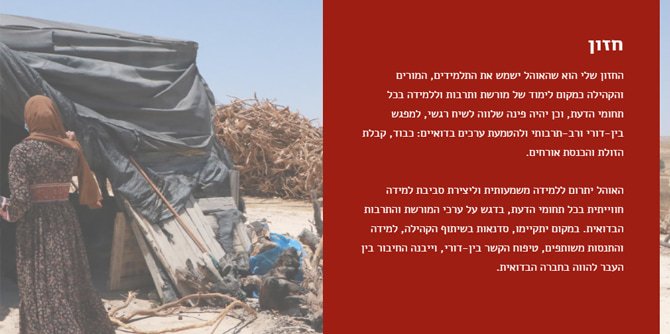
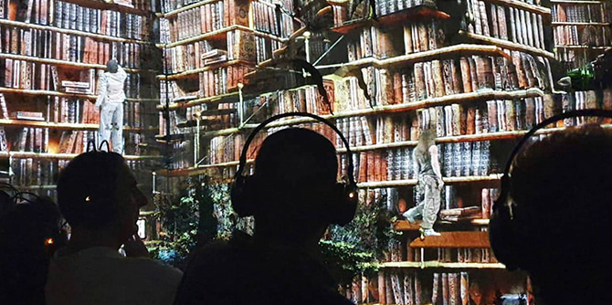

במסגרת תוכנית ההכשרה, לצד תכנים תאורטיים, עמיתי התוכנית מתנסים בחקר ובעשייה בשדה המקומי שלהם, דרך תכנון ופיתוח של פרויקטים כחלק מ"הרכיב המעשי". בתהליך שנתי זה העמיתים מעמיקים בסוגיות מפתח בנגב הדורשות שינוי ושיפור, מגבשים חזון ומתרגמים אותו לעשייה תרבותית מחדשת ואיכותית.
הרכיב המעשי הוא ביטוי לתאוריית השינוי של התוכנית, אשר גורסת כי ביסוס חיי תרבות בני-קיימא המותאמים לחברה בנגב הם מנוף לשיפור החיים במרחב זה, המהווה מוקד של התרחשות אמנותית ותרבותית איכותית; וכי פיתוח מנהיגות ממוקדת-תרבות תקדם שימור של זהויות ומסורות, ובה בעת תתרום להעמקת הזהות הלוקאלית, כזו שתחזק את ייחודיות הנגב ותעמיק את הזיקה למקום.
תהליך העבודה על הפרויקטים, בהובלת מנהלת התוכנית
פרופ' דנה אריאלי וחבר הסגל ד"ר יצחק (קיקי) אהרונוביץ', לווה בהנחיה אישית וקבוצתית של צוות מומחים רב-תחומי, אשר מגיעים מעולמות של תרבות חזותית, קהילה, חינוך, אמנות, אוצרות, סוציולוגיה ומחקר. בשונה מבוגרי המחזור הראשון לתוכנית, שהציגו את הפרויקטים שלהם בתערוכת מיצגים ייחודית באירוע סיום שהתקיים בתאטרון הפרינג' בבאר שבע, בוגרי המחזור השני, על רקע משבר הקורונה, הציגו את פרי עמלם באתר מיוחד שהוקם תחת הכותרת "חולמים תרבות בנגב", בהפקתה של חברת הסגל
הדס קידר.
אימאן אבו עליון, האוהל כמרכז לימוד ותרבות
הפרויקטים השונים מחוברים לאתגרי המקום והמרחב שבהם העמיתים פועלים, ומהווים התנסות בגיבוש יוזמה מנהיגותית מבוססת חזון ומונחית מחקר, המכוונת להתערבות בפועל במציאות. כמה דוגמאות לפרויקטים הן יוזמה של
יוגב וענונו, ממקימי בית "הומא", שמטרתה לטפח אמנות ויצירה במרחב העירוני של באר שבע על-ידי קידום המדיניות העירונית, לצד פיתוח שיעורי אמנות לנוער; פרויקט של
תמר הרצברג, מנהלת התחום הפדגוגי במוזיאון "משואה לתקומה", שמנסח תוכנית הכשרה שמטרתה לשלב בסגל המוזיאון מדריכים מהחברה הערבית-בדואית, כחלק מחזון לקידום דיאלוג יהודי-ערבי משמעותי; יוזמה של
אימאן אבו עליון, מורה ויזמת חברתית, שמטרתה לפתח את השימוש באוהל הבדואי כמרחב חינוכי ותרבותי, ובאמצעותו לחבר את הדור הצעיר למורשת הבדואית; ופרויקט שמוביל
נדב משעלי, מייסד סינמטק אופקים, ששם לו למטרה להקים נדבך נוסף לסינמטק לטובת פעילות חינוכית, חזותית ורב-תרבותית לילדים ולנוער באופקים.

בוזי רביב, תרבות נגישה בנגב
אנו מלאי אמונה כי יוזמות הבוגרים יהוו בסיס לפעילות מנהיגותית בנושאים הדורשים שינוי ושיפור במצב התרבות בנגב, ומאחלים לבוגרים הטריים שיהיו מלאי עוז להמשיך ולתרגם חלומות למעשים, ולחולל מהלכים אמיצים ופורצי דרך כדי להיטיב עם הקהילה והחברה בנגב – מהלכים המקדמים חברה ערכית, בריאה ואיתנה.
בוגרי המחזור השני, לצד בוגרי המחזור הראשון, הם חלק מקהילה נבנית של מנהיגים ומנהיגות בתחום התרבות, האמנות והיצירה בנגב. בימים אלו מרכז מנדל למנהיגות בנגב מכשיר את המחזור השלישי, ובקרוב מאוד תיפתח ההרשמה למחזור הרביעי בתוכנית.
{kind=link}
{kind=link}
{kind=link}